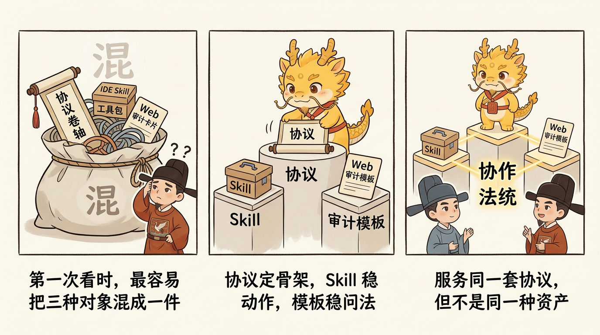

开始这里与落地形态
协议、Skill-与-Web-审计模板：三者关系

协议、Skill 与 Web 审计模板：三者关系
目录
- 这一页解决什么问题
- 先给一句最短定义
- 几种资产总表
- 第一部分：协议是什么
- 第二部分：Skill 是什么
- 第三部分：Web 审计模板是什么
- 为什么 Web 模板要和 Skill 分开
- 最容易出现的三种误读
- 读完这一页后的推荐下一步
这一页解决什么问题
这页属于第三层：关系与选型。
它不回答“我现在怎么跑”，而回答另一个更容易把人搞混的问题：
- 这个仓库到底交付了什么
Protocol / Skill / Web 审计资产分别是什么- 当你把它和主流方案比较时，哪些是方法论，哪些只是载体或强化器
很多人第一次看到这个项目时会把三件东西混成一件：
- 把协议当成一包可安装的 prompt
- 把 Skill 当成协议本身
- 把 Web 审计模板也当成需要安装的本地能力
这三种理解都会把入口逻辑带偏。
先给一句最短定义
Cyber-Ming-Protocol 是协议优先的项目。
- 协议定义治理骨架
- Skill强化 IDE 侧高频动作
- Web 审计模板强化 Web 侧审计问法
三者服务的是同一套协议，但不是同一类对象。
对外叙事最稳妥的总句式是：Protocol / Skill / Docs 是三种主落地形态，web-audit-templates/ 是分离的 Web 审计协作资产。
这一页之所以重点讲“协议、Skill、模板”，就是因为很多比较一开始就比错了对象：把交付形态和方法论混成一层，后面再谈和 workflow / spec-driven / agent-team 的关系就会全乱掉。
几种资产总表
| 对象 | 它是什么 | 放在哪 | 主要作用 | 是否必须 | 容易被误解成什么 |
|---|---|---|---|---|---|
| 协议 | 一套人机协作治理规则 | README.md、wiki/ | 规定什么该先做、什么算完成、谁负责什么 | 是，必须理解 | 一包 prompt 或一种审美叙事 |
| Skill | IDE-side 的稳定触发骨架 | skill/ | 帮你更稳定地触发规划、执行、探测、续命等动作，并在 serious work 时自动 bootstrap dev_repo/ 运行时真相层 | 否，可后装 | 协议本体、自动裁决器 |
| Docs / Teaching | 项目解释面与教学面 | README.md、wiki/ | 帮你理解协议、案例、边界与上手方式 | 是，必须阅读到足够理解 | 只是附属宣传页 |
| Web 审计模板 | Web-side 的审计协作模板 | web-audit-templates/ | 帮你更稳定地做方案审、验收审、续命判 | 否，可选 | 本地 Skill、自动执行器 |
第一部分：协议是什么
协议才是这个项目真正不可替代的部分。
它规定的是一套治理结构，例如：
- 先审批，再执行
- 先交原子执行合同，再允许动手
- 执行位不自证完成
- 完成要靠日志、工件、运行结果、提交记录等证据来成立
- 窗口腐烂时要续命，而不是在旧上下文里硬拖
这些东西即使没有 Skill，也依然成立。
第二部分：Skill 是什么
Skill 的作用，不是替你发明协议，而是帮你在 IDE 侧更稳定地守住协议。

例如当前 repo 里的 skill 会把一些高频动作固化下来：
approval-first-planner：先产出可审批的原子执行合同与边界approved-checklist-executor：按已批准的片严格执行、验证、归档probe-first-scout：不假装理解全局，先跑最小探测legacy-project-handover：在接手或续命时给出只读快照auditor-succession-prompt：在审计位也需要续命时，由 IDE 侧打包一份可复制给新审计位的续命提示词与输入包骨架free-development-mode：在用户显式开启后，用红线、主线与反毒方法继续可控推进长时开发
但它们都不改变一件事：
Skill 不能替你裁定真相。
但它现在可以帮你做另一件很关键的事：
自动建立并维护真相应该落脚的地方。
当 serious work 开始时，对应 skill 会在需要时自动 bootstrap dev_repo/，把 state.json / journal.jsonl / evidence_index.json / tree.md 这套运行时骨架立起来。这样做不是让 Skill 代替证据，而是把“当前到底在哪个合同、父子关系是什么、回哪里、有哪些工件”从口头上下文里搬到可审工件里。
所以更准确地说：
- Skill 不能替你宣布“已完成”
- 但 Skill 可以替你把“当前真相容器”先立起来
- 真正的完成事实，仍然要靠日志、工件、运行结果和审计来成立
第三部分：Web 审计模板是什么
Web 审计模板不是本地 Skill，也不是在 IDE 里触发的执行器。
它们只是帮助你在 Web 侧更稳定地扮演审计位：
- 审方案是否够原子
- 审完成是否真的成立
- 审当前窗口是否已经腐烂，需要续命
它们做的是“如何问、如何查、如何判”的骨架，而不是“如何施工”的骨架。
为什么 Web 模板要和 Skill 分开
因为这两边承担的是不同角色：
- IDE-side skill 对应执行、规划、探测、接手
- Web-side template 对应方案审计、完成审计、续命判断
如果把它们都装进 skill/，读者很容易误以为：
- Web 审计也是一种本地安装物
- 执行位与审计位只是同类工具的不同 prompt
- 审计可以在同一窗口里顺手完成
这会削弱协议最重要的一层：角色分离与主权居中。
最容易出现的三种误读
误读一：装了 Skill，协议就自动生效
不对。 装了 Skill 只是更容易触发对的动作，不等于已经满足对的证据标准。
误读二：不装 Skill，就不能用 Cyber-Ming
不对。 这套协议首先是可手工执行的治理方法。你完全可以先手工跑闭环，再决定是否安装。
误读三：Web 审计模板也属于要安装的技能包
不对。 Web 模板的作用是协助审计位盘问、核验、裁断，它们不是 IDE-side 的本地技能。